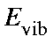
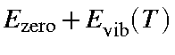
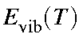
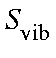
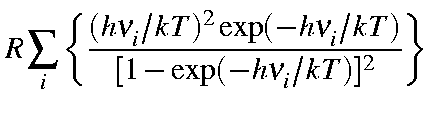

Next: Rotational terms Up: Thermochemistry from ab Previous: Thermochemistry from ab


Next: Rotational terms Up:
Thermochemistry from ab Previous:
Thermochemistry from ab
The vibrational contribution to the internal energy arises from population of the vibrational energy levels. The vibrational partition coefficient, Qvib, is given by:

Evib, for a molecule at the temperature T as:

where h is Planck's constant, ni the i-th normal vibration frequency, and k the Boltzmann constant. For 1 mole of molecules, Evib should be multiplied by the Avogadro number Na = R/k. Thus:
|
|
1 |
Note that the first term in the above equation is the zero-point vibration
energy. Hence, the second term is the additional vibrational contribution due to
the temperature increase from 0 K to T K. Namely,
|  | = |  | |
| | = | 
| |
|  | = |
 |
2 |
The value of
Evib from
GAUSSIAN 82 and 86 includes
Ezeroas
defined by Equation 1 and Equation 2.
|
 |
= |

|
| |
= |  |
At temperature T>0 K, a molecule rotates about the x, y, and z-axes and translates in x, y, and z-directions. By assuming the equipartition of energy, energies for rotation and translation, Erot and Etr, are calculated.


Next: Rotational terms
Up: Thermochemistry
from ab Previous:
Thermochemistry from ab